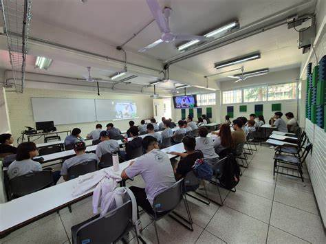
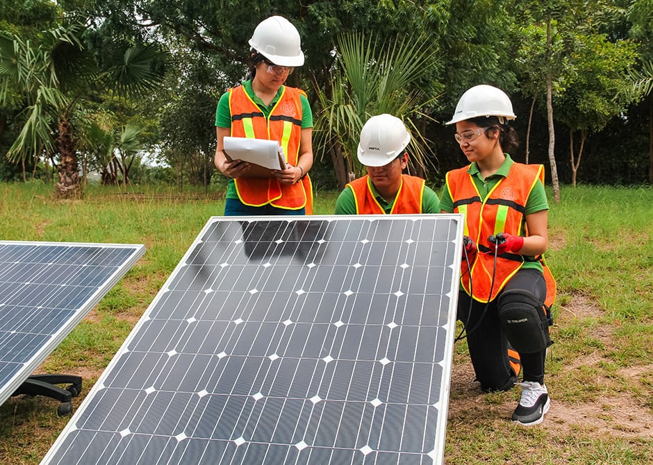
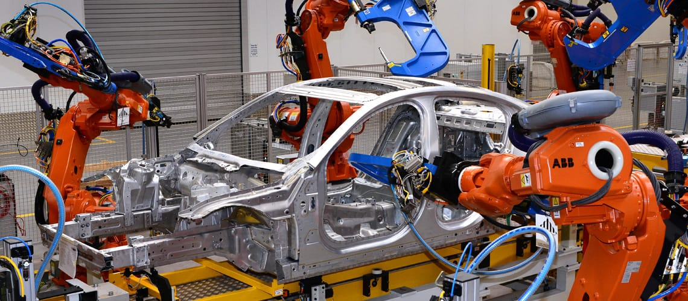

Regresar
-
Ingeniería Informática
Protege la información digital y los sistemas de comunicación frente a amenazas y ataques.

-
Arquitectura
Combina arte, ciencia y tecnología para diseñar y planificar espacios habitables, funcionales y
estéticamente agradables.
-
Gestión empresarial
se centra en la formación de profesionales capaces de planificar, organizar, dirigir y controlar las operaciones de una empresa para alcanzar sus objetivos. Abarca la gestión de recursos financieros, humanos, tecnológicos y la toma de decisiones estratégicas para el crecimiento y la sostenibilidad de la organización.

-
Sistemas computacionales
se enfoca en el diseño, desarrollo, implementación y mantenimiento de sistemas de hardware y software. Los profesionales de esta área son capaces de identificar, planear, construir y dar soporte a sistemas electrónicos, inteligentes, de programación, de bases de datos, de cómputo gráfico y otros.

-
Ingeniería Civil
Diseño, construcción y mantenimiento de infraestructuras esenciales como edificios, puentes y
carreteras.

-
Ciencias y Técnicas de la Comunicación
Estudio y aplicación de procesos comunicacionales en diversos medios y plataformas.
-
Ingeniería Industrial
Optimiza procesos y recursos en sistemas productivos y de servicios para mejorar la eficiencia.
-
Administración de Empresas
Prepara a los estudiantes para dirigir organizaciones en áreas como finanzas, marketing y operaciones.

-
Ingeniería en industrias alimentarias
se enfoca en la transformación de materias primas agropecuarias en productos alimenticios seguros, nutritivos y de calidad. Implica el diseño, desarrollo y gestión de procesos en la cadena alimentaria, desde la producción hasta el consumo.

-
Ingeniería en Mecatrónica
Integra electrónica, mecánica y sistemas de control para desarrollar tecnología automatizada.
